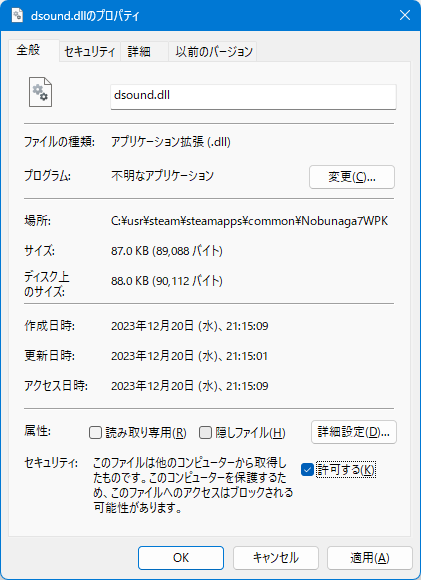

将星録 wpk (Steam版)には、BGMが突然再生されなくなるという問題があります。 特に、
この２つは100％の確率でBGMの再生が止まります。
以下のプログラム 「dsound.dll」を導入することにより、この問題を原則解決します。

Githubリポジトリ
「将星録.mod」を導入している場合は、 「dsound.dll」は何も処理せず、「将星録.mod」が替わりに同じことを(より正確に)処理します。